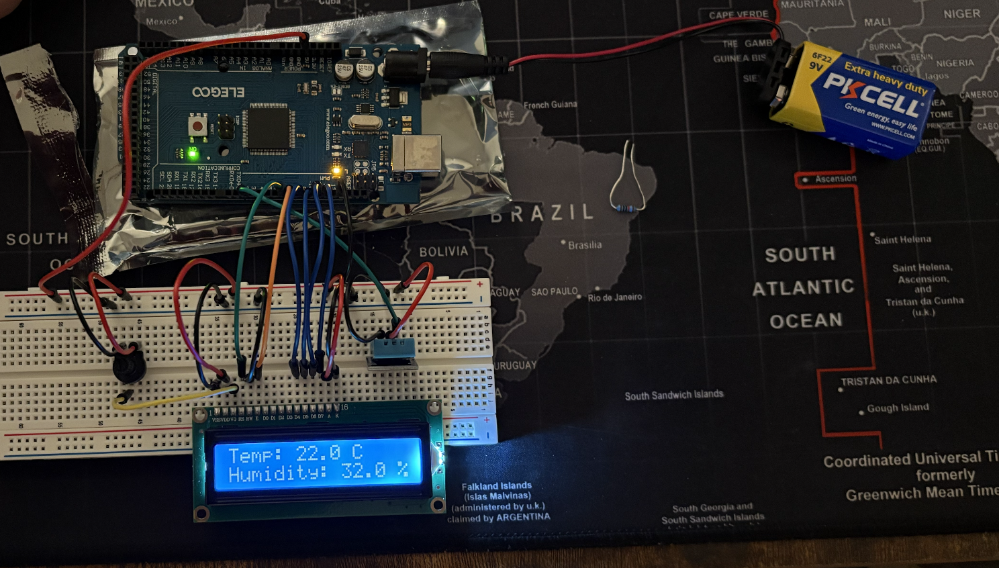

Boise State University, Electrical Engineering

This section features highlights from my club involvement, volunteering, and technical exploration outside classwork.
As an Intervarsity Christian Fellowship leader, I have the privilege of leading a Bible study where we explore scripture and discuss how faith applies to our daily lives. Beyond the study sessions, I am committed to serving the campus community through various outreach initiatives and mentoring opportunities. Additionally, I help organize and host a weekly gathering where students come together to build community, share experiences, and grow spiritually. This role has taught me the value of servant leadership and deepened my ability to connect with and support others.